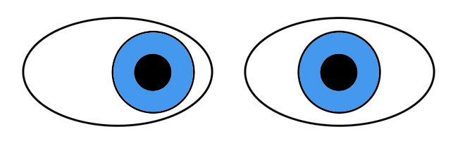
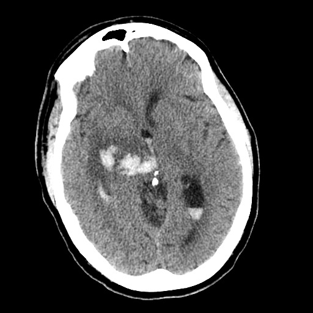

☰
Brainstem Ocular Motor Disorders
Acute Comitant Esotropia

What is it?
Recent-onset diplopia and comitant esotropia when fixating a distant target
Common causes: breakdown of latent esophoria, spasm of the near reflex
Uncommon (but serious) causes: increased intracranial pressure, subarachnoid hemorrhage, acute thalamic or brainstem lesion, meningoencephalitis
What does it look like?
Core neuro-ophthalmic features
Diplopia
Full ocular versions and ductions
Comitant esotropia when fixating a distant target [
Acute Comitant Esotropia
Eyes are often aligned when fixating a near target
Possible accompanying neuro-ophthalmic features
Episodic convergence, miosis, and accommodation, which are components of the synkinetic near response, as part of “spasm of the near reflex”
Intermittent back-and-forth conjugate saccadic movements (“volitional flutter”)
Volotional FLutter and Spasm of near Reflex
Papilledema
Possible accompanying neurologic features
Reduced consciousness
Impaired cognition
Ataxia
Extremity weakness and numbness
Possible imaging features

Ventriculomegaly
Cerebellar, thalamic, or midbrain lesion
Meningitis
Subarachnoid hemorrhage
Lumbar puncture may show an elevated opening pressure or abnormal constituents suggesting meningitis or subarachnoid hemorrhage
What else looks like it?
Bilateral sixth nerve palsies
Decompensated esophoria
Accommodative esotropia
What should you do?
Look for signs of spasm of the near reflex
Convergence movements that interrupt ocular versions
Episodic miosis and pseudomyopia
Exclude signs of an underlying brain lesion
Order brain MRI if you have definitely excluded spasm of the near reflex, or found incomitant misalignment, or other neurologic features
Order lumbar puncture if MRI is normal
What will happen?
Most cases without other neurologic impairments are caused by decompensated esophoria or spasm of the near reflex, but…
Tip:
distinguishing between decompensated esophoria and spasm of near reflex may be difficult
Tip:
in very young children, accommodative esotropia associated with uncorrected high hyperopia must be excluded
Diplopia of decompensated esophoria is easily palliated with base-out prism
Eye muscle surgery is indicated only if
Esotropia has not resolved after at least 9 months
Esotropia is large
Patient does not want to wear glasses with prism
Trap:
eye muscle surgery for spasm of the near reflex carries a risk of consecutive exotropia (See
Spasm of Near Reflex
)
Brainstem Ocular Motor Disorders
Internuclear Ophthalmoplegia
Skew Deviation
Dorsal Midbrain Syndrome
Thalamic or Midbrain Syndrome
Unilateral Pontine Syndrome
Bilateral Pontine Syndrome
Dorsolateral Medullary (Wallenberg) Syndrome
Ototoxic Vestibulo-ocular Dysfunction Syndrome
Acute Upgaze Deviation
Acute Downgaze Deviation
Acute Comitant Esotropia
Omnidirectional Slow Saccades
Omnidirectional Saccadic Pursuit